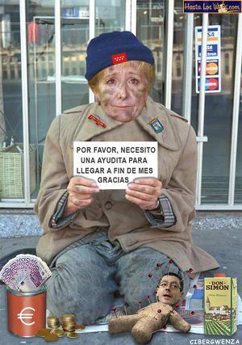

Esperanza Aguirre
 De: La Frikipedia, la enciclopedia extremadamente seria.
De: La Frikipedia, la enciclopedia extremadamente seria.
De la serie grandes personajes:
| Nacimiento
|
1835
|
| Muerte
|
siempre vivirá en nuestros corasones
|
| Ocupación
|
reina, presidenta y diosa
|
| Nacionalidad
|
ESPAÑOLA
|
| Malo o bueno
|
SUPER BUENA
|
| Atentados contra la humanidad
|
II Reconquista, Trasvase amazónico
|
| Religión
|
Católica apostólica romana y más papista que el puto papa
|
| Notas
|
Todo dieces
|
«Oh! Santiago Segura, me apasionan sus cuadros»
~ Esperanza al ser preguntada por un periodista sobre Santiago Segura
«Perdona, me confundí, ese era Bustamante»
~ Esperanza rectificando sobre la primera cita
«Ay... si el helicóptero hubiera volado más alto»
~ Rojo lamentándose por la suerte que tuvo Esperanza Aguirre en un accidente de helicóptero
«Está visto y demostrado que la esperanza es lo último que se pierde»
~ Rojo filósofo sobre Esperanza
Santa Espe, alias Reina Cervecera, fue la primera política española en llegar a Santa. Presidenta y reina de lo que quedaba de Urdazi.
Infancia y juventud

Como bruja que es, por ella no pasan los años
Santa Espe o "Santa Pancha Vendita para los inmigrantes latinos "nace en el seno de una familia muy pobre de la nobleza madrileña. De pequeña pasaba tanto frío que una vez incluso tuvo que ponerse una rebequita. Su infancia es un cúmulo de calamidades: siendo muy joven perdió su Barbie y le compraron otra pero ya no era lo mismo. Su adolescencia tampoco estuvo exenta de sufrimiento: a los 16 años se vio obligada a coger el autobús de línea, y éste tardó más de 15 minutos en pasar. Pero no sería hasta 1994 en que Santa Espe tuviera su particular "annus horribilis". El 9 de enero se le murió el tamagotchi que le habían traído los reyes, lo que supuso de por si un golpe terrible. Buscando consuelo, se fue a la peluquería, pero le dejaron el pelo superfatal. Desesperada, quedó con unas amigas para ir al cine, y la película era supermala a pesar de ser de Leonardo DiCaprio. En semanas sucesivas perdió una lentilla, se le rompió un tacón, le salió un grano en la oreja, y un día al ir a depilarse la cera estaba supercaliente y se quemó un poco. Felizmente un día se le apareció la Virgen encima de un bolso en el escaparate de Loewe, y le ordenó dedicarse a la política a mayor gloria de nuestro señor.
Su fortaleza de espíritu y su templaza, la permiten subsistir con un sueldo de 9.000 euros mensuales, aunque dicen algunas fuentes bien informadas, que no han sido aun contrastadas, que se la ha visto mendigar por Madrid y utilizar los comedores sociales de Caritas, disfrazada de pipera.
 No sabíamos que lo de su sueldo fuera tan grave!
Primeros años en política
Comienza su carrera política como primera teniente de alcalde del municipio Vallisoletano de Castañar del Hipotálamo. Ya establecida, incita a que se monte una estación del AVE en la provincia de Guadalajara en medio de ninguna parte. Casualmente y por cosas del destino, unos meses antes, sus familiares compran todos los terrenos de alrededor de la estación, y deciden crear una nueva ciudad. Esto devuelve a Esperanza la ilusión de vivir. Pronto es nombrada Ministra por José María Aznar, y después de unos años de duras pugnas con el ateo y cyberbolchebique Alberto Ruiz Gallardón se presenta a la presidencia en el 2008, siendo la primera persona en ganar las elecciones por unanimidad, su acertado lema "Espejo de lo que somos" le fue de gran ayuda.
Presidencia y reinado
Santa Espe fusionandose con el pueblo en pos de sus santas labores.
Ya como presidenta, promueve una serie de reformas sociales destinadas a mejorar la calidad de vida de los españoles en el más allá:
- Aprueba la creación de una estatua de Monseñor Rouco Varela de 2Km. de alta en el centro de Madrid. Pero descubre con alegría que no es una estatua sino un robot teledirigido a distancia por el astuto arzobispo, que lo envía a destruir Barcelona y Sitges.
- Lleva a cabo la creación de un nuevo cuerpo policial: la Guardia Civil Pontificia, encargada de supervisar el cumplimiento del ayuno y abstinencia obligatorios durante la semana santa, y de la monitorización a distancia de las actividades conyugales el resto del año.
- Crea un nuevo reality-show: "Gran Hermana Clarisa", en el que 12 novicias entran en un convento pero solo la más gorda llegará a ser madre superiora, alimentándose de yemas, pastas y almendrados hechos por ellas mismas. El show cosecha un éxito sin precedentes a lo largo de 87 temporadas, debido seguramente a las escenas de sexo lésbico explícito.
- Asimismo, resucita la Santa Inquisición mediante el programa "inquisitor 2020", que viene a ser como "la máquina de la Verdad", pero sustituyendo el polígrafo por el potro de tortura. En este programa se descubrieron muchos insospechados herejes, como Federico Jiménez Losantos y Ana Botella.
- Declara inconstitucionales a los Borbones y los destierra al islote de Perejil, proclamándose Super Reina de España en medio del clamor popular.
- Lleva a cabo el famoso Trasvase Amazónico, trasvasando toda el agua del río Amazonas a España para regar un campo de golf de 800.000 hectáreas en Los Monegros.
II Reconquista
En el año 2037 consigue reanexionarse el Desmembración Española del 2008, contrayendo matrimonio con el Lehendakari Xabier Arzalluz I el Jatorra. En 2040, los ya llamados II Reyes Católicos consiguen anexionar también Cataluña, adoptando al Gran Mufti Carod Rovira I y proclamándolo Infante Superideal de España y Príncipe de Beukelaer. Precisamente sería Carod Rovira I el encargado de reconquistar las Terres Recalificades del País Valenciá al mando de la Armada Inconcebible. Poco después se les uniría la República Geriátrica de Galicia, donde el entrañable abuelete D. Manuel Fraga Iribarne gobernaba con mano de hierro a los 37 habitantes que quedaban.
Juntos consiguieron finalmente reunificar la península, invadiendo la República Urbanística de Nueva Marbella (antiguamente llamada Andalucía) y destituyendo a su virrey Katxuli I el Excarcelado.
Santidad
En 2047, un día en que su tercer marido 'Don Xabier' insistía en hacer uso del Sagrado Sacramento del Matrimonio, se le aparece San Josemaría Escrivá de Balaguer en forma ectoplásmica y le conmina a fundar una orden religiosa a mayor gloria de nuestra Señora. Así, funda las Esperancianas de María, con las que obtiene el 1er. premio en la feria de ganado "Ciudad de Calahorra 2050".
Santa Espe fue declarada Santa de utilidad pública por S.S. Benedicto XXXIV el 15 de febrero de 2053. La Santa Sede ha publicado una lista de los milagros más impresionantes que se le atribuyen:
- En 1999 unos terrenos familiares en Villanueva de la Cañada son recalificados milagrosamente y multiplican su valor por intervención de la Santa.
- En 2008 obra ante la prensa acreditada en la XXIV Inauguración del Hospital Santa Privatización de Getafe, el milagro de la multiplicación de las incubadoras itinerantes, dejando boquiabierto al mismísimo San Roldán Caralítico, que seguía el evento desde casa con unas amigas.
- En múltiples ocasiones organiza espectaculares eventos que usa para demostrar sus habilidades como escapista, como es el caso del "...Mariano, déjale a Güemes que lo lleve..." en la plaza de toros de Móstoles o el de "¡Las mujeres y los ofidios primero! Cubridme que voy a por refuerzos y enseguida vuelvo..." en Bombai (India).
- En 2004, Eufemiano Fernandez se encomendó a la santa para que le librase de un feroz ataque de caspa que venia sufriendo. La caspa no desapareció, pero se redujo grandemente.
- En diciembre del 2006, los miembros de la CIA, ayudados por los miembros de MIB, consiguen constatar que verla en persona por lo menos nueve veces impide que el mundo no sea conquistado por extraterrestres como Bonnie Tyler (algunos incluso han llegado a decir que es la única que puede comunicarse con dichos extraterrestres ¿Por qué será?)
- Actualmente Espe piensa en formar un partido paralelo al PP para enfrentarse a su amigo Marianin y destronarle en las elecciones, con esto ella tomara el mando del PP y borrara a los rojos del mapa proclamandose autifice de España (bueno todo esto es una ilusión)
- Hoy por hoy es incapaz de llegar a fin de mes con un sueldo de casi 9.000€ y se la ha visto mendigar por Madrid (fuente no contrastada) Un grupo de "groupies de Espe" la propuso al premio nobel de Ciencias de la Cara Dura, que perdio ante Pedro Jeta "meameenlacara" Ramírez.
- Propició la caída de la bolsa.
- En 2009 su aparición televisiva curó un ataque de hipo que duraba ya más de 20 minutos al niño Isósceles Rebollo de Mamotreto. La criatura contaba tan solo 37 años de edad.
- En 2009, Ermengarda Cifuentes rezó dos novenas a santa Espe desesperada porque no encontraba ropa de su talla. A los pocos días encontró unos pantalones de talla 87 en las rebajas de Lidl.
- Entre sus últimos milagros, y para fervor de sus acólitos y acólitas, destaca la supresión de las mamografías en los hospitales públicos, tiempo después de superar esta enfermedad.
Régimen Esperanzador
- En 2099 después de pensar de que todo lo que había hecho era una absoluta mierda, se dedicó a lo que más le gusta, a fastidiar a los catalanes. Con un ejército liderado por Bush y Barbie, y formado por Carod-Rovira (versión 100%) y César Vidal.
- En 3888 ya cansada consiguió establecer el dialecto madrileño en todos los pueblos de España, como anteriormente había hecho con el catalán, debido a su enorme afecto por todo aquello que comience por CAT-.
- En 3999 ocupó el cargo de Caudilla por España y finalizó su obra. Casarse con Darek.
- En 34000 los españoles se piraron de su país. No soportaban más TeleEspe todas las mañanas, querían algo más jocoso como Aquí hay pepino, o La que se menea, o 30 minutos de gilipolladas vídeos caseros.
Enlaces externos
Autor(es):
- Nexo
- Radiobishop
- Jowsh
- MURO DE AGUAS
- Cañonero
- Frikiman
- Aque
- Khazike Khashondo
- Luso Banton
- Amaterasu
Frikipedia 2005-2016, Licencia
GFDL 1.2 - Extraído por FrikiLeaks